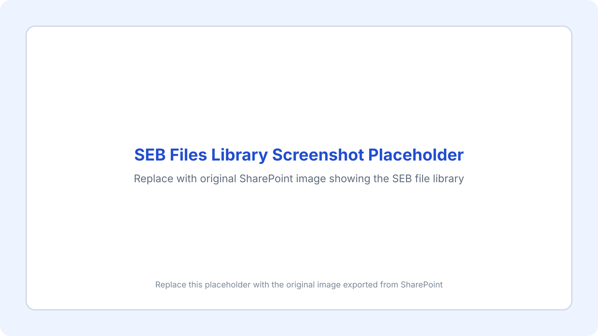
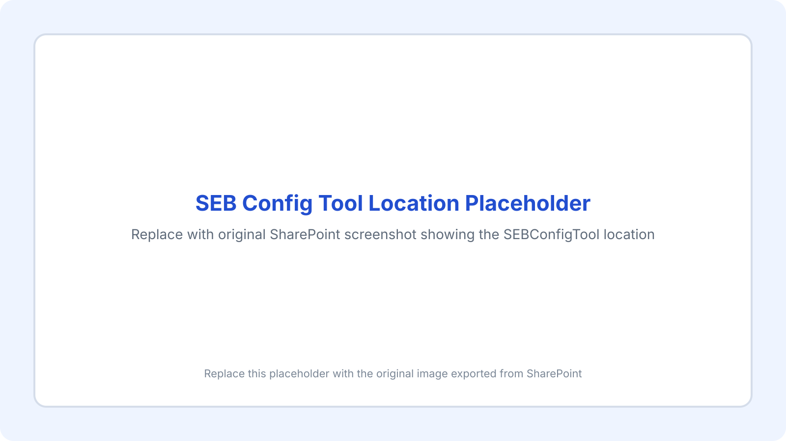
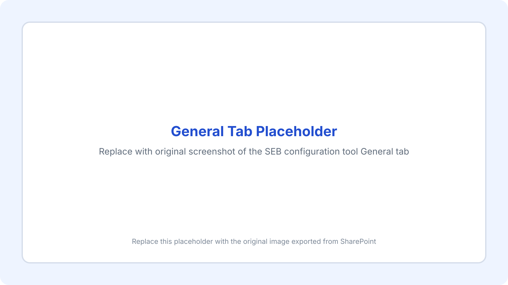
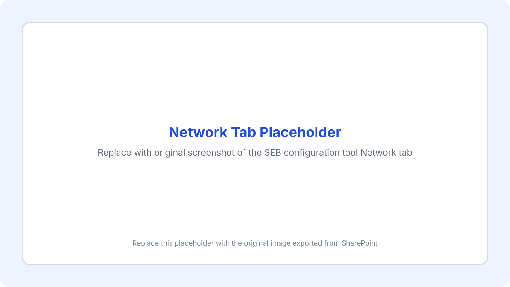
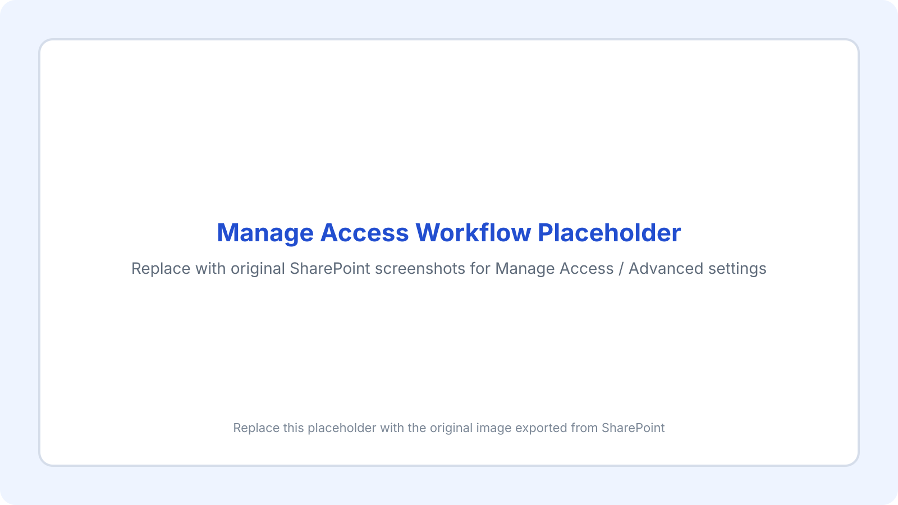

Core Configuration Files
HWDSB_EQAO_MATH.sebModified March 31, 2025HWDSB_EQAO_W_RESOURCES.sebModified December 13, 2024HWDSB_SEB_HUB.sebModified October 17, 2024HWDSB_SEB_MATHTOOLS.sebModified October 17, 2024
Assessment Support Resource
A polished, portable HTML rebuild of the original SharePoint resource page, prepared for GitHub Pages hosting.
The Safe Exam Browser can be used to ensure students can only access certain resources when completing summative assessment activities.
This guide outlines several prebuilt configuration files as well as the basic process for editing or creating your own .seb configuration file for classroom use.
A few different configurations were created to address common assessment use cases, including EQAO assessments, math course assessments, and Brightspace / HUB assessments.
HWDSB_EQAO_MATH.sebModified March 31, 2025HWDSB_EQAO_W_RESOURCES.sebModified December 13, 2024HWDSB_SEB_HUB.sebModified October 17, 2024HWDSB_SEB_MATHTOOLS.sebModified October 17, 2024HWDSB_SEB_OneNote_inOneDrive.sebModified January 30, 2025HWDSB_SEB_OneNote_inTeams.sebModified January 30, 2025
To modify one of the configuration files, first locate the SEB Config Tool on a Windows device:
Windows (C:) / Program Files / SafeExamBrowser / Configuration / SEBConfigTool
.seb files and save it locally.REDACTEDWithin the General tab, you can protect the configuration file with an administrator password and optionally create a separate quit / unlock password. This is also where the Start Page URL is configured.
The prebuilt files already point to HTML pages with the required links included, but you can change the start page to any URL that fits your assessment workflow.


If you need access to an entire site instead of one page, you can use a wildcard after the root URL.
hwdsb.elearningontario.ca/*After making your changes, return to the Config File tab and choose Save Settings As… to create a new configuration file.
The OneNote option can support either a dedicated assessment notebook or an open-book approach where students can access their class notes during an assessment.
onenote:, remove that prefix so the URL begins with https:// before placing it in the Start Page field.The OneNote template files already include the necessary login and redirect URLs under the Network tab; teachers only need to insert the notebook URL in the Start Page field.

When students need to be added back after permissions were removed, use the public OneNote Class Notebook permission repair tool:
https://www.onenote.com/classnotebook/notebook-fix?auth=2
Locate the notebook and choose Fix Permissions. This will restore student access based on membership in the underlying Team.